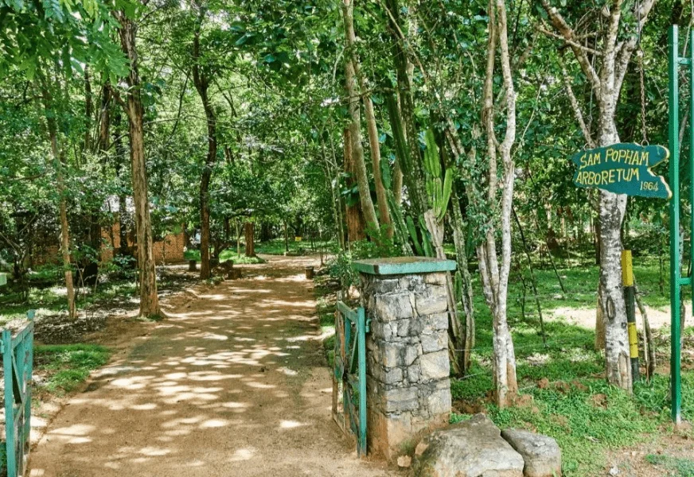

The only dry-zone arboretum in Sri Lanka, a beautiful 36-acre forest reserve dedicated to the preservation of native tropical flora.
Popham's Arboretum was established in 1963 by Sam Popham, an Englishman who dedicated his life to transforming a scrubland into a thriving dry-zone tropical forest. Unlike many traditional botanical gardens, this arboretum focuses on natural reforestation, showcasing a spectacular collection of native trees like Ebony, Satinwood, and Ironwood.
A walk through the arboretum's shaded paths is a journey into the true heart of Sri Lanka's dry-zone wilderness. It is a vital sanctuary for diverse wildlife, including elusive nocturnal animals like the Grey Slender Loris. Whether you're a serious botanist or a nature lover seeking quiet reflection, Popham's Arboretum offers a rare and beautiful insight into the island's unique environmental heritage.
Back to Dambulla Hub